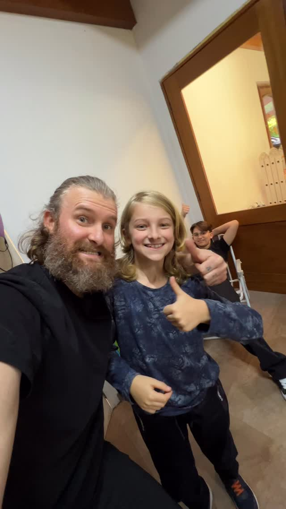
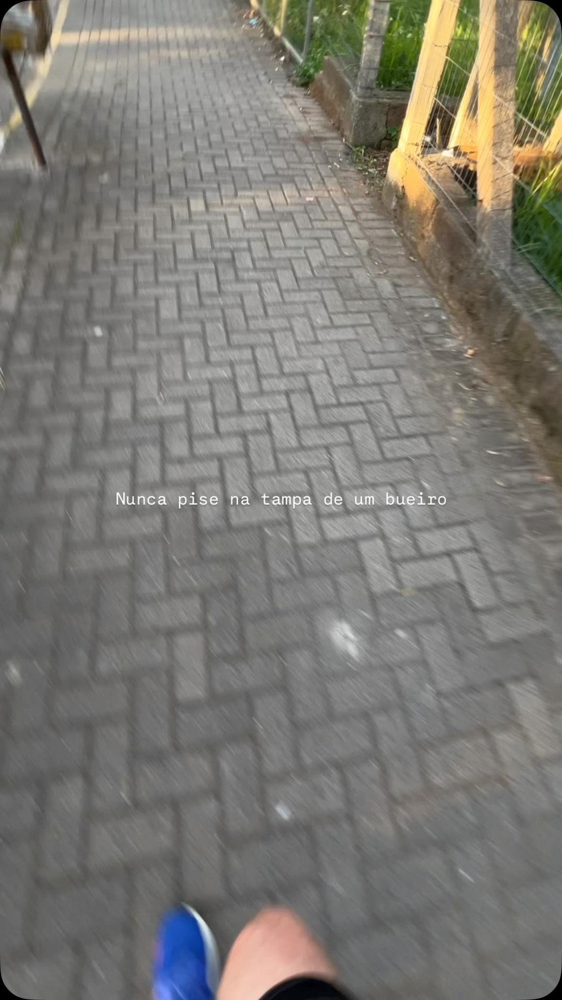

O vídeo se destacou como o mais visto do mês porque tocou num ponto muito humano: a sensação de resolver um problema que os especialistas ignoraram. Com mais de 1.100 visualizações e um tempo médio de assistência acima de 16 segundos, as pessoas ficaram no vídeo — o que mostra que o formato tutorial curto e pessoal funcionou muito bem. Os 8 comentários também indicam que o assunto gerou identificação, e não apenas curiosidade passageira.
Ver no Instagram →
O tempo médio de visualização de 8.634 milissegundos mostra que as pessoas assistiram o vídeo até quase o fim, o que é um sinal forte de que o conteúdo prendeu a atenção. Com 12 interações entre curtidas e comentários para um alcance de 298 pessoas, a taxa de engajamento ficou acima do esperado para um perfil em crescimento. Uma legenda curta e intrigante como "Nunca!" provavelmente ajudou a criar curiosidade antes mesmo de o vídeo começar.
Ver no Instagram →Em junho, os dois Reels publicados foram o único formato utilizado e já entregaram resultados consistentes: 1.641 visualizações com alcance de 934 pessoas e taxa de engajamento de 4,8%, um índice saudável para uma página em crescimento. O formato de vídeo curto está claramente ressoando com a audiência, o que confirma que o caminho está certo. Para julho, a sugestão é aproveitar esse momento favorável aumentando a cadência para três ou quatro Reels, testando variações no gancho dos primeiros três segundos para identificar qual abordagem gera mais retenção e, consequentemente, mais alcance orgânico.